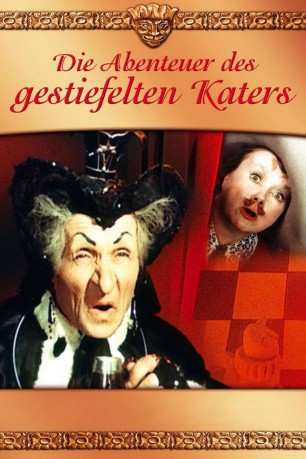

#10824 Die Abenteuer des gestiefelten Katers
 
 IMDB-Wertung: 7.0 / 10
IMDB-Wertung: 7.0 / 10  Metascore: 0
Metascore: 0 
Eines Tages erkrankt die Prinzessin im Reich des Schachspiels, woraufhin ihr Vater unverzüglich verkünden lässt: "Wer die Prinzessin heilt, ganz gleich wo er wohnt, wird mit dem halben Schachreich belohnt." Unterdessen bemerkt Wanja, dass er einen Wunderkater aus dem Märchenland geerbt hat. Beide freunden sich an. Als der Kater von der Kunde des Königs hört, begibt er sich auf den Weg in dessen Schloss. Dort erfährt er, dass nur eine Nachtigall das Herz der Prinzessin erfreuen kann. Gesagt, getan. Mit einer List gelangen beide ins Schloss und können die Prinzessin heilen. Inzwischen planen aber die intrigante Hofdame Dvulice und ihr Minister Crivello selbst das Zepter im Schachreich zu übernehmen. Mithilfe einer Tante Dvulices, der bösen Zauberin und Königin des Kartenreiches "Pik Dame", gelingt dies zunächst. Die Prinzessin wird verbannt. Der gestiefelte Kater und Wanja machen sich nun auf den gefährlichen Weg ins Reich der bösen Zauberin.
Jahr: 1958
Dauer: 83 Minuten
FSK:
Land: Soviet-Union Studio: Artkino PicturesTonspuren:
Untertitel:
Auflösung: SD (576x320) Größe: 696 MB
Genre: Familie
Regisseur: Aleksandr Rou
Drehbuch: Sergey Mikhalkov
Soundtrack: Andrei Volkonsky
Darsteller:
- Mariya Barabanova als Cat
- Anatoliy Kubatskiy als Lyuba's Grandpa / Unylio
- Vyacheslav Zharikov als Vanya / Marquee Karabas
- Stepan Kayukov als Patisone
- Tamara Nosova als Court Lady Dvulichie
- Georgiy Millyar als Court Jester / Witch
- Vladimir Volodin als Zelenshchik
- Lev Potyomkin als Guards Head
- Vladimir Ivanov als
- Viktor Kulakov als
- Aleksandr Zhukov als
- Olga Gorelova als Lyuba / Princess
- O. Krylova als Olya / Belaya peshka
- I. Asmus als Klava / Chornaya peshka
- Konstantin Zlobin als Krivello
- Lidiya Vertinskaya als Young Sorceress
- Nikita Kondratyev als Ambassador of Count Domino
Datei: X:\Märchen\Abenteuer des gestiefelten Katers, Die (1958, FSK, 576x320).avi seit 09.03.2019
Festplatte: Kinder-Filme+Trick
 Es gibt insgesamt 61 Filme in der Gruppe 'Märchen'
Es gibt insgesamt 61 Filme in der Gruppe 'Märchen'